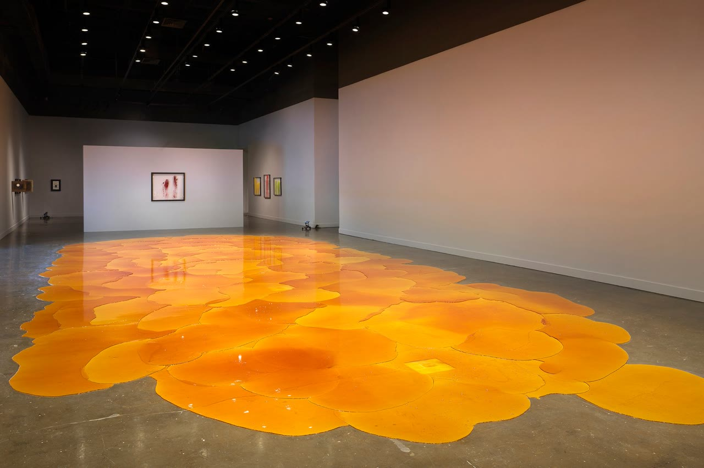
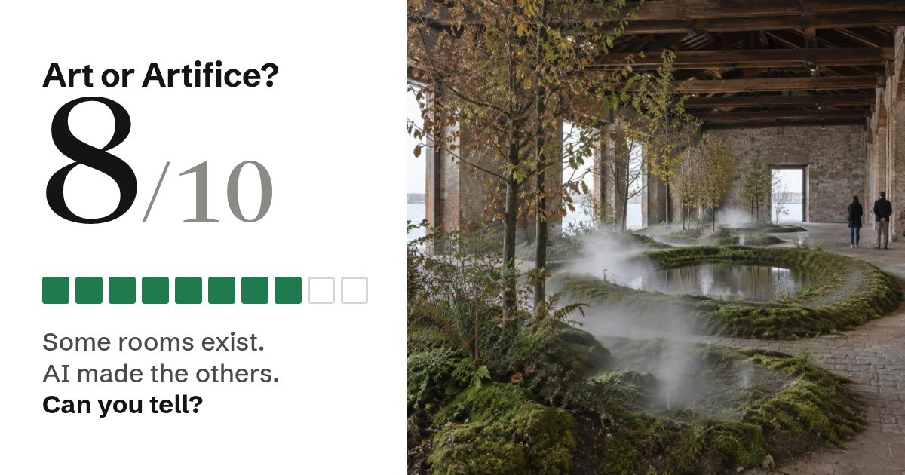

Tap Real or AI
The wall label tells you the truth
AI copies real works. The label names them.
Ten photographs a day
Everyone gets the same ten
Then post your score
1 of 3
Real or AI?
321
Real
Real
AI
Teresa Solar Abboud
Kunstverein Hannover, 2024
Photo: Mathias Völzke
2 of 3
Real or AI?
321

AI
Real
AI
AI made this room.
It imitates Big Chief Demond Melancon, Venice 2026 and Nick Cave soundsuits.
3 of 3
Real or AI?
321

Real
Real
AI
Goldin+Senneby
Flare-Up, MIT List Visual Arts Center, Massachusetts, 2025
Courtesy of the artists. Photo: Dario Lasagni.
Is this room real?
Art or Artifice?
How many did you get?
Play ten a day.
Post your score
Art or Artifice? #35
🟩🟥🟩🟩🟩🟩🟥🟩🟩🟩 8/10 in 0:24
https://artgen-studio.wooqianghao.workers.dev/s/8

Art or Artifice?
A new round every day
artgen-studio.wooqianghao.workers.dev/game